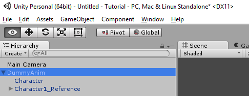
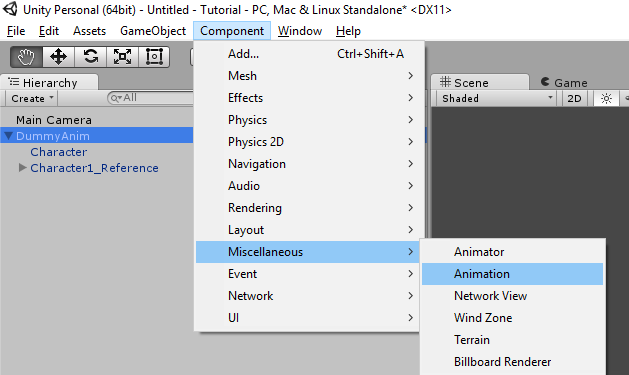
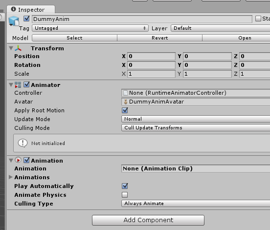
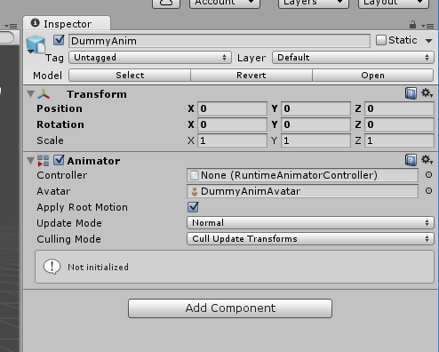
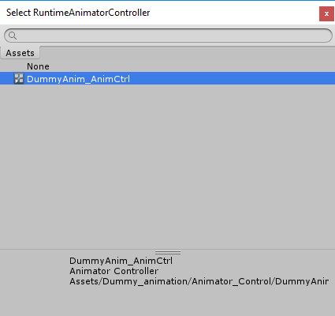
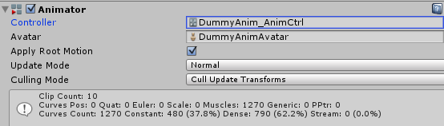

Now that the Dummy Anim is in Unity, we want to add which Animations it can use.
In the Hierarchy window, click on the DummyAnim prefab.

Click on the Component Menu, and select "Miscellaneous", then "Animation".

We will now have a new Component added to the Inspector window.

The Animation box is currently showing None (Animation Clip), meaning, there is no default animation set.
We want to have Play Automatically checked, so when the prefab gets spawned into the world, it'll start the Default action.
Notice the "not Initialized" on the Animator object? On some models, the Animator is added, by not initialized.

Click on the circle at the end of the Controller text box, and re-select it.

It should now look like this:

Created with the Personal Edition of HelpNDoc: Free HTML Help documentation generator